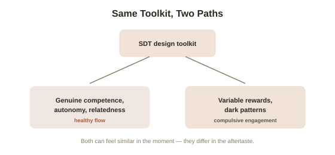

Chapter 4: Video Games, Self-Determination Theory, and Where Design Turns Exploitative
Chapter 3 ended with a hook worth taking seriously: video games are frequently cited as one of the most effective, deliberately engineered sources of flow and intrinsically satisfying engagement in modern life. That's genuinely true, and worth examining in real detail — and it's exactly the same design logic that, pushed further by a different set of incentives, produces something considerably less healthy.
Why games map so cleanly onto Self-Determination Theory
Well-designed games satisfy all three of Chapter 1's core needs with unusual precision, largely because game designers have spent decades iterating specifically toward maximum engagement, whether or not they used SDT's specific vocabulary to describe what they were doing. Competence gets built in through clear, immediate feedback — a score increasing, a level completing, a visible skill tree filling in — giving players constant, unambiguous evidence of genuine progress, exactly the kind of feedback Chapter 3's flow channel requires. Autonomy shows up through meaningful choice — which path to take, which character build to pursue, which strategy to attempt — even within a structure the designer fully controls, giving players the felt sense of self-directed decision-making Chapter 1 identified as essential. Relatedness often gets satisfied through multiplayer cooperation, guilds, or shared in-game culture, connecting players to other people around a common, engaging activity. Well-designed single-player games, and well-designed multiplayer ones alike, tend to nail all three needs simultaneously — which is a large part of why games can sustain attention for hours in a way homework, or many jobs, rarely manage on their own.
Where the exact same tools get turned toward something else
The same design principles that satisfy genuine psychological needs can be, and increasingly are, engineered toward a different goal: not player enjoyment or growth, but maximized engagement time and monetization, sometimes at direct cost to the player's actual interests. Variable ratio reinforcement schedules (rewards delivered unpredictably rather than on a fixed schedule — the same underlying mechanism that makes slot machines so compelling, since not knowing exactly when the next reward is coming keeps engagement high even through many unrewarded attempts) show up directly in loot box systems and randomized reward drops, borrowed deliberately from casino psychology rather than from Chapter 1's model of healthy intrinsic motivation. Dark patterns — daily login streaks designed to induce loss-aversion-driven guilt at missing a day (directly exploiting the loss aversion mechanism covered elsewhere in this library), artificial scarcity, and social pressure mechanics designed to leverage relatedness manipulatively rather than genuinely — represent competence, autonomy, and relatedness being simulated or exploited rather than authentically supported. The player often still reports feeling engaged, even absorbed — but engagement engineered this way increasingly resembles Chapter 2's crowded-out, purely extrinsic compliance more than Chapter 3's genuine flow, even though it can feel similar from the inside in the moment.

A practical distinction worth being able to draw
The clearest practical marker separating the two paths, supported by the SDT research this library has covered across several chapters, is what happens to the activity's appeal once the artificial pressure is removed. Genuine flow and healthy intrinsic engagement (Chapter 3) tend to remain appealing, and often feel more restorative than draining, in retrospect, once the session ends. Engagement built on variable-ratio rewards and dark patterns more often produces a specific, recognizable aftertaste: a sense of having been compelled rather than genuinely engaged, sometimes real regret about the time spent, and a paradoxical desire to return anyway despite that regret — a pattern much closer to compulsive checking behavior than to the restorative absorption Csikszentmihalyi described. This distinction doesn't require condemning games broadly; it gives a specific, usable test for any individual game or app: does this leave you feeling more capable and engaged, or does it leave you feeling pulled back against your own better judgment.
Applying this beyond games
The same variable-ratio and dark-pattern toolkit, developed and refined largely in gaming, has migrated directly into social media, shopping apps, and countless other engagement-optimized products — the pull-to-refresh gesture, the unpredictable timing of likes and notifications, and infinite scroll all borrow the identical unpredictable-reward mechanism from slot machine and loot box design. Understanding exactly why games are so engaging — the genuine SDT-satisfying version and the exploited variable-reward version — gives a transferable lens for evaluating essentially any product competing for attention, not just games specifically.
Try this
Ideas for noticing or testing this in your own life.
- Apply the aftertaste test to an app or game you use regularly: after a session, do you feel more capable and satisfied, or drained and compelled to return despite mixed feelings?
- Notice a variable-ratio reward mechanism in your own daily apps — an unpredictable notification, an infinite scroll, a randomized drop — and see if you can name the specific design pattern at work.
Worth pulling on?
A few loose threads from this chapter — if any of these genuinely grab you, that's a good sign of where to go next.
- Everything covered so far in this topic assumes motivation is present in some form, healthy or exploited — but motivation can also collapse entirely, into a state SDT treats as genuinely distinct from either intrinsic or extrinsic motivation. → The subject of the final chapter in this topic: amotivation and learned helplessness.
- Variable-ratio reinforcement's power connects directly to the psychology of loss aversion and unpredictable reward covered from the economics side elsewhere in this library. → Already in the library: Behavioral Economics covers loss aversion and related reward psychology from a market-behavior angle.